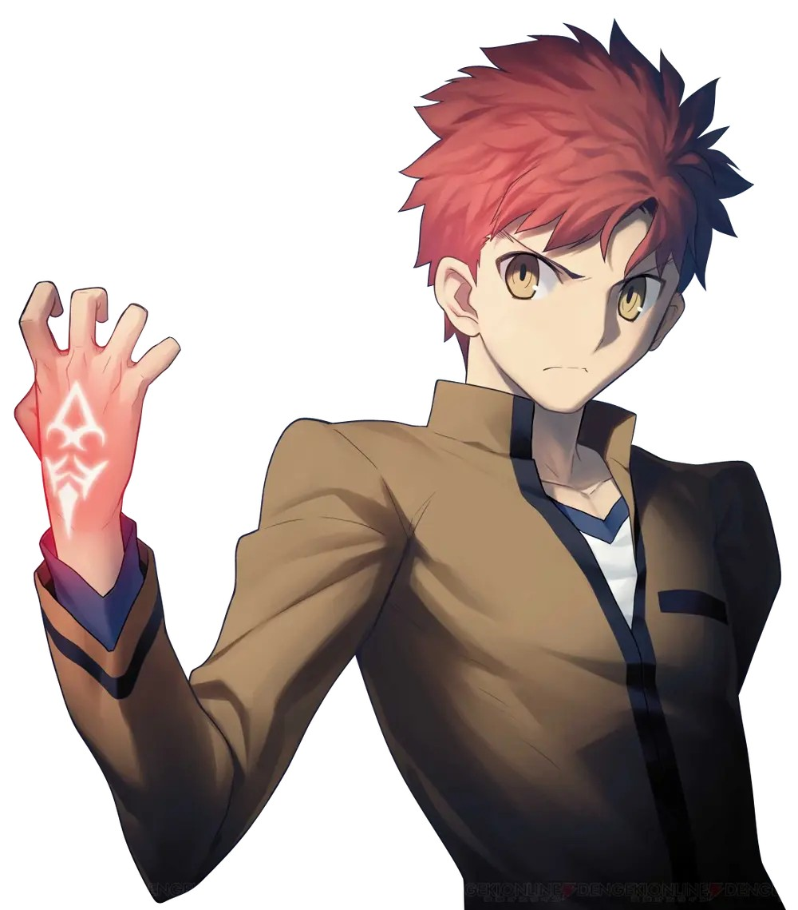

เหตุผลที่อยากเรียน Full stack web development คือ ต้องการพัฒนาทักษะในด้านการพัฒนาเว็บไซต์ทั้งด้าน frontend และ backend เพื่อให้สามารถทำสิ่งที่อยากทำได้
ความคาดหวังต่อวิชานี้ คือ สามารถพัฒนาทักษะและองค์ความรู้ในด้านการพัฒนาเว็บไซต์ เพื่อให้สามารถนำไปใช้ประโยชน์ได้
จุดอ่อนที่ตนเองต้องพัฒนาเกี่ยวกับทักษะ Programming และ แนวทางการพัฒนา
จุดอ่อนของผมคือ การเขียนโค้ด แนวทางการพัฒนาของผมคือ พัฒนาทักษะในการเขียนโค้ดและการออกแบบโค้ดให้ดีขึ้น